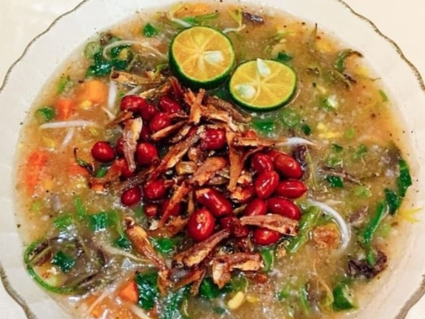
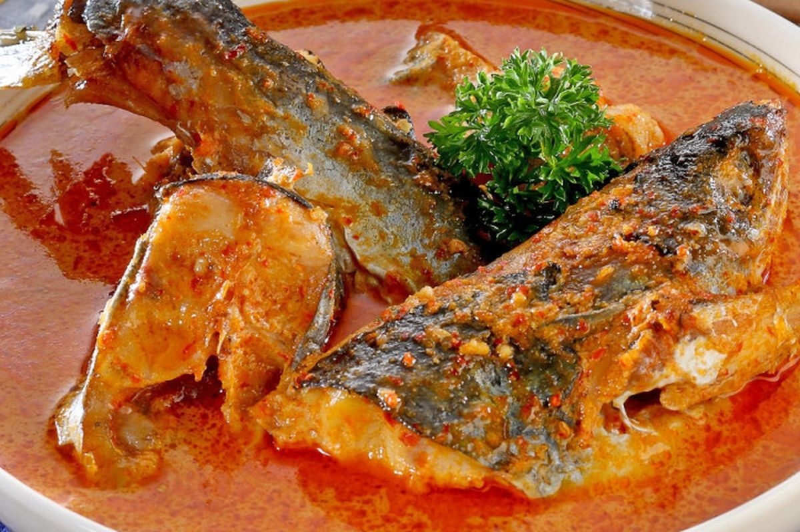
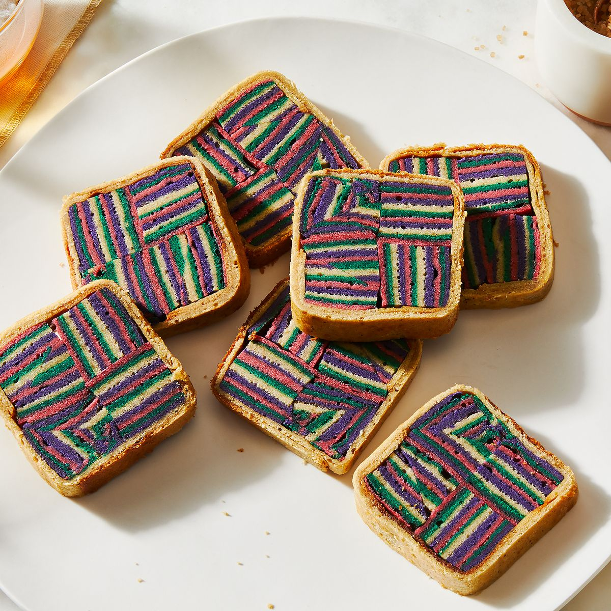
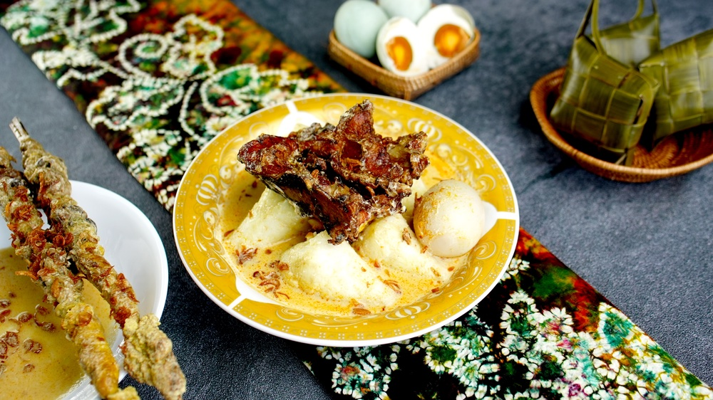

Ayam Cincane
Ayam bakar khas Kalbar dengan bumbu rempah yang kaya dan aroma khas daun cincane.
Bahan-bahan:
- 1 ekor ayam, potong sesuai selera
- 5 siung bawang merah
- 4 siung bawang putih
- 3 cm jahe
- 3 cm kunyit
- 5 buah cabai merah keriting
- 2 batang serai, memarkan
- Daun cincane secukupnya (bisa diganti daun salam jika sulit)
- Garam dan gula secukupnya
- Minyak untuk menumis
Cara membuat:
- Haluskan bawang merah, bawang putih, jahe, kunyit, dan cabai merah.
- Tumis bumbu halus dengan serai dan daun cincane hingga harum.
- Masukkan potongan ayam, aduk rata dan beri garam serta gula.
- Masak ayam hingga bumbu meresap dan ayam empuk.
- Bakar ayam di atas bara api sambil dioles sisa bumbu hingga matang dan beraroma.
- Sajikan hangat dengan nasi putih dan sambal.

Bubur Pedas
Bubur khas Suku Dayak dengan rempah dan sayur-sayuran segar yang menggugah selera.
Bahan-bahan:
- 100 gr beras
- 50 gr sagu
- 100 gr daun melinjo, cincang halus
- 100 gr daun kesum, cincang halus
- 100 gr daun kemangi
- 5 siung bawang merah, iris
- 3 siung bawang putih, iris
- 2 buah cabai merah, iris tipis
- 1 liter kaldu ayam atau air
- Garam dan lada secukupnya
- Minyak untuk menumis
Cara membuat:
- Cuci beras dan sagu, rebus dengan kaldu hingga agak mengental.
- Tumis bawang merah, bawang putih, dan cabai hingga harum.
- Masukkan tumisan ke dalam rebusan bubur.
- Tambahkan daun melinjo, kesum, dan kemangi, masak sebentar hingga layu.
- Beri garam dan lada, aduk rata dan sajikan hangat.

Ikan Patin Bakar Sambal Tempoyak
Ikan patin bakar disajikan dengan sambal tempoyak khas fermentasi durian dari Kalbar.
Bahan-bahan:
- 1 ekor ikan patin, bersihkan dan belah dua
- 2 sdm minyak goreng
- Garam dan merica secukupnya
- 100 gr tempoyak (fermentasi durian)
- 5 buah cabai merah
- 3 siung bawang merah
- 2 siung bawang putih
- 1 sdt gula merah
- 2 sdm minyak goreng untuk sambal
Cara membuat:
- Bumbui ikan patin dengan garam dan merica, diamkan 15 menit.
- Bakar ikan hingga matang dan beraroma, sisihkan.
- Haluskan cabai, bawang merah, dan bawang putih.
- Tumis bumbu halus dengan minyak hingga harum, masukkan tempoyak dan gula merah, masak hingga rata dan sedikit mengental.
- Sajikan ikan bakar dengan sambal tempoyak.

Kek Lapis Sarawak
Kue lapis khas Kalbar dengan lapisan warna-warni yang cantik dan rasa manis lembut.
Bahan-bahan:
- 200 gr mentega
- 200 gr gula halus
- 6 butir telur
- 150 gr tepung terigu
- 100 gr susu kental manis
- Pewarna makanan sesuai selera
- 1 sdt vanili bubuk
Cara membuat:
- Kocok mentega dan gula hingga lembut.
- Masukkan telur satu per satu sambil terus dikocok.
- Tambahkan tepung terigu, susu kental manis, dan vanili, aduk rata.
- Bagi adonan menjadi beberapa bagian, beri pewarna sesuai selera.
- Tuang lapisan adonan satu per satu di loyang, panggang tiap lapisan sampai matang sebelum lapisan berikutnya.
- Panggang sampai semua lapisan selesai dan matang sempurna.
Soto Banjar
Sup ayam berempah dengan kuah bening khas Banjar yang segar dan gurih.
Bahan-bahan:
- 500 gr ayam kampung, potong-potong
- 2 liter air
- 5 siung bawang putih, haluskan
- 5 siung bawang merah, haluskan
- 2 cm jahe, memarkan
- 2 batang serai, memarkan
- 3 lembar daun salam
- 1 sdt pala bubuk
- Garam dan merica secukupnya
- 100 gr bihun, seduh
- Telur rebus, bawang goreng, dan daun seledri untuk pelengkap
Cara membuat:
- Rebus ayam dengan air hingga empuk dan kaldu keluar.
- Tumis bawang putih, bawang merah, jahe, serai, dan daun salam hingga harum, masukkan ke dalam kaldu.
- Tambahkan pala, garam, dan merica, masak 15 menit.
- Siapkan mangkuk, tata bihun, ayam suwir, telur rebus, dan siram dengan kuah.
- Taburi bawang goreng dan daun seledri, sajikan hangat.

Ketupat Kandangan
Ketupat dengan lauk ikan gabus kuah santan pedas khas Kalimantan Barat.
Bahan-bahan:
- 500 gr ikan gabus, bersihkan dan potong-potong
- 2 buah ketupat
- 500 ml santan dari 1 butir kelapa
- 5 siung bawang merah
- 3 siung bawang putih
- 5 buah cabai merah keriting
- 2 lembar daun salam
- 2 batang serai, memarkan
- Garam dan gula secukupnya
- Minyak untuk menumis
Cara membuat:
- Tumis bawang merah, bawang putih, dan cabai merah hingga harum.
- Masukkan daun salam dan serai, aduk sebentar.
- Masukkan ikan gabus, aduk rata dan masak hingga ikan berubah warna.
- Tuang santan, masak dengan api kecil sambil diaduk hingga kuah mengental.
- Beri garam dan gula sesuai selera, koreksi rasa.
- Sajikan ikan kuah santan bersama ketupat hangat.